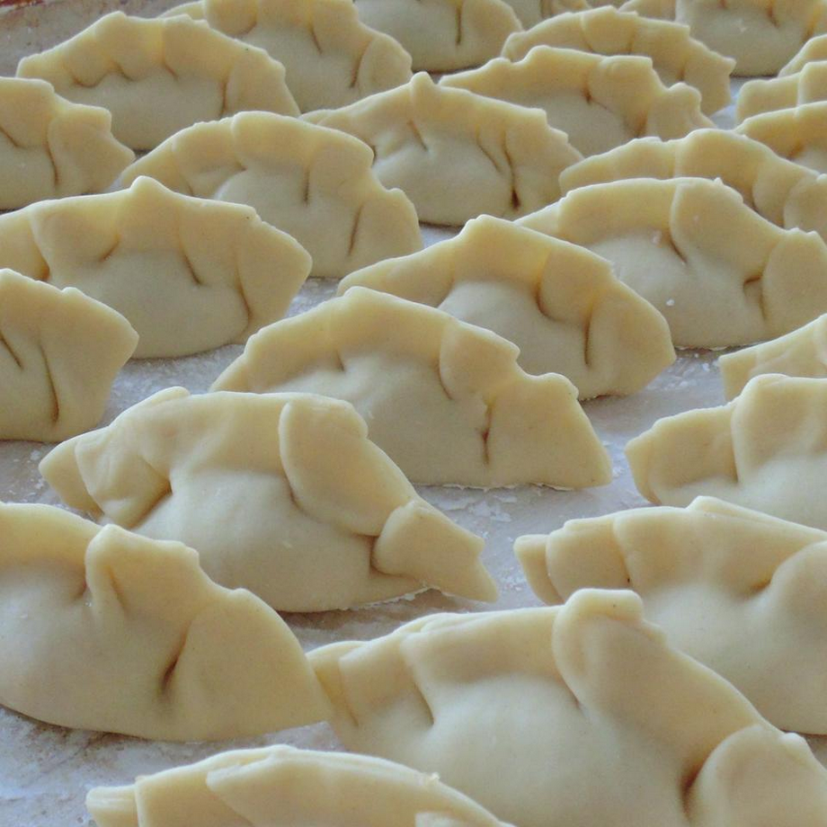

Wonton Wrappers

Description
Thin dough wraps suitable for use in preparing various types of dumpling.
Though difficult to master, these wraps are handy additions to a cook's catalog.
Ingredients
- 1 egg
- 1/3 cup water
- 2 cups all-purpose flour
- 1/2 teaspoon salt
Steps:
- In a medium bowl, beat the egg. Mix the water into the beaten egg.
- In a large bowl, combine the flour and salt. Create a well in the center of the mixture and slowly pour in the egg and water while mixing. Mix well. If the mixture is too dry, add additional water--one teaspoon at a time--until a pliable dough has formed.
- On a lightly floured surface, knead the dough until elastic. Cut dough into two separate balls. Cover the balls with a damp cloth, and let rest at room temperature for at least 10 minutes.
- Cut each ball into four equal pieces. Each ball should be rolled out, relatively thin (around 1.5 mm is normal), and cut to a shape that suits what you intend to wrap. For instance, gyoza are well suited to a circular wrapper. Have fun with it!
- The sides of each individual wrapper may be lightly floured to prevent them from sticking to each other. Stacked, these may be wrapped in plastic and stored fresh or frozen.
Return to index